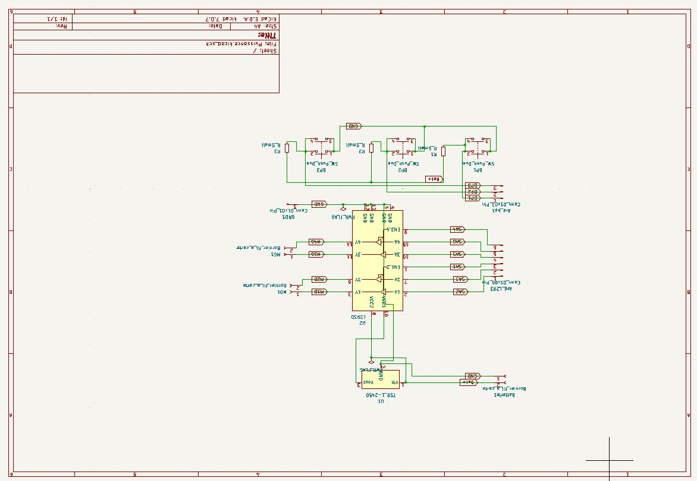
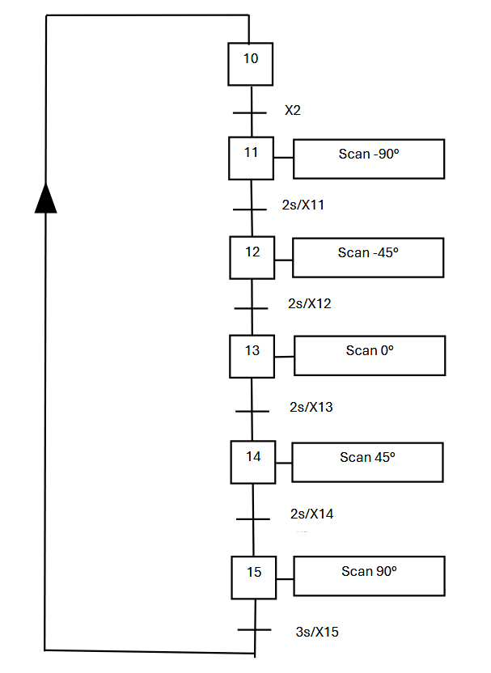
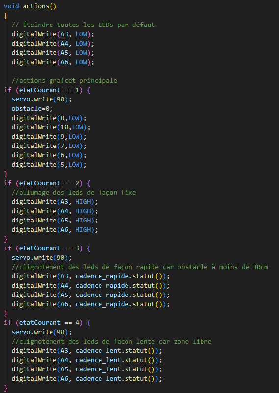

SAE 2 · BUT 1 · GEII
Robot mobile
slalomeur.
Concevoir et vérifier un robot chenillé capable de repérer les obstacles devant lui, de choisir une direction libre et de se déplacer.

01 — Contexte et besoin
Cette SAE de première année porte sur la réalisation en équipe d’un robot mobile sur châssis chenillé. Le robot doit balayer cinq directions devant lui (−90°, −45°, 0°, 45° et 90°), détecter les obstacles, s’orienter vers une voie dégagée puis avancer jusqu’à rencontrer un obstacle.
Le système s’appuie notamment sur une carte Arduino Mega, deux moteurs, un capteur de distance orienté par servomoteur et des voyants d’état. Un magnétomètre était prévu pour fournir le cap du robot.
02 — Travaux présentés en équipe
La soutenance, présentée par moi-même et deux coéquipières, documente plusieurs volets du projet. Les documents ne précisent pas la répartition individuelle de chaque tâche ; les réalisations ci-dessous sont donc décrites comme un travail d’équipe.
- Conception de la carte et préparation du dossier de fabrication sous KiCad (schéma, PCB et fichiers de fabrication).
- Élaboration du GRAFCET principal et du GRAFCET synchronisé pour le balayage des cinq directions.
- Programmation de l’Arduino, assemblage de l’électronique et vérification des soudures.
- Essais du robot complet et analyse du fonctionnement du magnétomètre.
03 — Démarche technique
- Définir les fonctions attendues et les phases de fonctionnement du robot.
- Concevoir la carte électronique et son dossier de fabrication, puis réaliser les soudures.
- Séparer la séquence principale et le balayage du capteur dans deux GRAFCET synchronisés.
- Programmer les actions de commande sur Arduino et intégrer les capteurs, moteurs et voyants.
- Tester l’assemblage et le déplacement du robot.
04 — Résultats et vérification
La soutenance conclut que le robot est fonctionnel sans le magnétomètre. Le magnétomètre a été défaillant ; le résultat est donc partiel par rapport au système prévu. Les supports ne donnent pas de mesures détaillées ni de protocole d’essai formalisé, et je ne leur attribue pas de résultats supplémentaires.





05 — Compétences mobilisées
Structurer les fonctions du robot, concevoir une carte électronique sous KiCad et organiser le comportement à l’aide de GRAFCET.
Contrôler les soudures et tester le robot assemblé ; confronter le résultat au fonctionnement visé et constater la défaillance du magnétomètre.